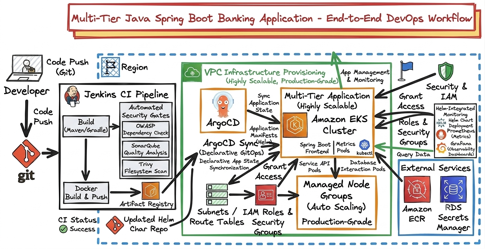
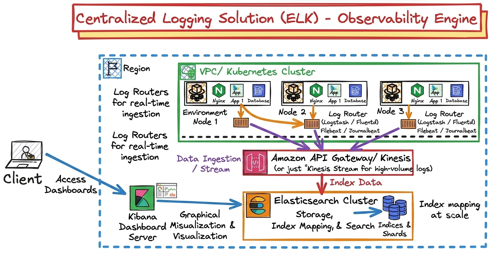
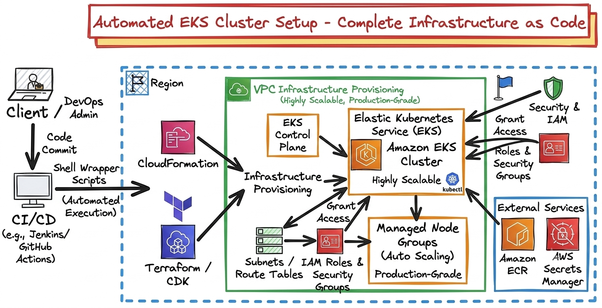

Multi-Tier Java Spring Boot Banking Application
Designed an end-to-end continuous integration and deployment workflow for a high-security multi-tier banking application written in Java (Spring Boot). Configured a robust Jenkins CI pipeline featuring automated security gates including OWASP dependency checks, SonarQube quality analysis, and Trivy filesystem vulnerability scans. Engineered declarative GitOps delivery using ArgoCD to synchronize application states onto an AWS EKS cluster, managed and monitored completely via Helm charts integrated with Prometheus and Grafana.

3-Tier Scalable Web Deployment
Architected a decoupled, highly scalable 3-tier web infrastructure optimized for zero-idle execution and cost-efficient scaling. The frontend leverages Amazon Route 53 and CloudFront CDN for global edge delivery of static assets secured in Amazon S3. Dynamic API requests are routed via an Application Load Balancer (ALB) into a hybrid logic tier enclosed within a secure VPC, balancing event-driven micro-tasks via Amazon API Gateway and AWS Lambda alongside containerized services managed by Amazon ECS (Fargate). The entire ecosystem is backed by a highly available, ultra-low latency Amazon DynamoDB NoSQL data tier.

Centralized Logging Solution (ELK)
Deployed a comprehensive, centralized observability engine across critical environment nodes. Configured systemic log routers for real-time traffic record aggregation, storage, index mapping, and graphical metrics visualization dashboards.

Automated EKS Cluster Setup
Automated the creation of a highly scalable, production-grade Elastic Kubernetes Service (EKS) cluster on AWS. This configuration orchestrates resource instantiation entirely through code, leveraging shell wrappers for specialized environment setup.
